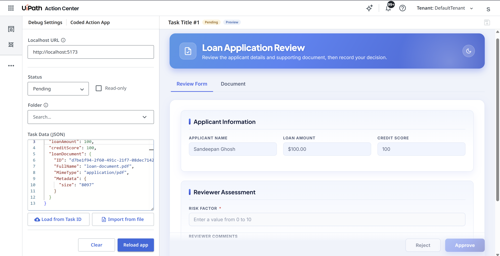

Getting Started¶
Coded Action Apps let you build the user interface for Action Center tasks as custom web applications. This gives full control over the task layout, behavior, integrations and lets the app surface data from other UiPath services and external systems so reviewers have the context they need to complete the task.
Cloud only
Coded Action Apps are currently available on UiPath Automation Cloud only. Automation Suite and Dedicated deployments are not supported at this time.
Communicating with Action Center
To exchange task data with Action Center from within your app (receive the task, notify of changes, complete the task), use the @uipath/coded-action-app SDK.
Prerequisites¶
- Node.js 20.x or higher
- npm 8.x or higher
Install the CLI¶
Minimum versions
Coded Action Apps requires CLI version >= 0.9.0 and codedapp tool version >= 0.9.0.
Check your installed CLI version:
Check your installed codedapp tool version:
To update the codedapp tool to the latest version:
Install the Coded Action App SDK¶
A coded action app runs inside a sandboxed iframe rendered by Action Center, so it can't read or write task data directly — the action app and its Action Center host live in separate browsing contexts. The @uipath/coded-action-app SDK bridges that gap and wraps the underlying window.postMessage protocol behind a small, typed CodedActionApp API.
Use the SDK to:
- Receive the task and its data when your app loads —
getTask() - Notify Action Center when the user edits the form, so it can enable the Save button —
setTaskData() - Complete the task with the chosen action and final payload —
completeTask() - Display toast messages inside Action Center —
showMessage()
A minimal flow looks like this:
import { CodedActionApp } from '@uipath/coded-action-app';
const service = new CodedActionApp();
// 1. Load the task when the app starts
const task = await service.getTask();
console.log(task.title, task.data);
// 2. Tell Action Center the form changed (enables Save button)
service.setTaskData({ ...task.data, approved: true });
// 3. Complete the task when the user submits
const result = await service.completeTask('Approve', { approved: true, notes: 'Looks good' });
if (!result.success) {
console.error(result.errorMessage);
}
See the SDK Getting Started guide for the full API and usage details.
Which SDKs do I need in my coded action app?¶
Every coded action app uses two packages, recommended to always use both for deployment compatibility using UiPath Solutions:
@uipath/coded-action-app— talks to Action Center (getTask,setTaskData,completeTask,showMessage). This is the package shown above.@uipath/uipath-typescript(npm install @uipath/uipath-typescript) — providesgetAppBase(), which you must use to set your app's base path so it resolves correctly behind the<base href>Action Center injects (see Configure router base path).
Whether you need an OAuth clientId depends only on what your app does — not on which SDKs you install:
| If your app: | Needs clientId? |
|---|---|
| Reads/completes the task only | No |
| Also calls other UiPath services (Orchestrator, Data Fabric, etc.) | Yes |
getAppBase() does not require a clientId
@uipath/uipath-typescript serves two independent purposes. Calling getAppBase() to set your base path is a purely client-side helper and needs no OAuth clientId. You only need a clientId (from a registered external application) when you use the same SDK to call UiPath service APIs.
Configure uipath.json¶
Create a uipath.json at the root of your project. This file holds SDK and OAuth configuration used both during local development and at deployment time.
{
"clientId": "your-oauth-client-id",
"scope": "your-scopes",
"orgName": "your-org",
"tenantName": "your-tenant",
"baseUrl": "https://api.uipath.com",
"redirectUri": "Irrelevant for coded action apps, use any non-empty string"
}
| Field | Required | Description |
|---|---|---|
clientId |
Conditional | A non-confidential OAuth client ID from an external application registered in your UiPath org. Required only if your app calls other UiPath services; not needed for apps that only interact with Action Center |
scope |
Conditional | OAuth scopes your app needs. Only applies when clientId is set — scopes are bound to the client, so with no clientId there is no scope. Defaults to all scopes registered with the provided clientId |
orgName |
No | Your UiPath organization name or ID |
tenantName |
No | Your UiPath tenant name or ID |
baseUrl |
No | UiPath platform base URL (defaults to https://api.uipath.com) |
redirectUri |
No | OAuth redirect URI (only needed for local dev) |
Tip
If uipath.json doesn't exist, uip codedapp pack creates it with empty values and warns you to fill in the required fields.
Set Up Local Development (Optional)¶
1. Install @uipath/coded-apps-dev¶
Install @uipath/coded-apps-dev - a bundler plugin that injects SDK configuration into your app during local development, so you can run and test it against your UiPath tenant without any manual config.
Then add the plugin to your bundler config:
The plugin reads uipath.json and injects the following <meta> tags into your index.html during local development:
<meta name="uipath:client-id" content="your-oauth-client-id">
<meta name="uipath:scope" content="OR.Execution OR.Folders">
<meta name="uipath:org-name" content="your-org">
<meta name="uipath:tenant-name" content="your-tenant">
<meta name="uipath:base-url" content="https://api.uipath.com">
<meta name="uipath:redirect-uri" content="http://localhost:5173">
When deployed, the platform injects these config tags automatically — the plugin is only needed for local development. At deployment, the platform also injects:
2. Add Action Center redirect uri in your external application¶
Add redirect uri https://cloud.uipath.com/<orgId>/<tenantId>/actions_ to the external application you are using in uipath.json. Ignore if it already exists.
(It is added automatically the first time any coded action app using this external application is deployed.)
3. Open Action Center Coded Action App Debug page¶
Action Center offers a task-simulation experience for coded action apps running on localhost.
Open https://cloud.uipath.com/<orgName>/<tenantName>/actions_/debug/coded-action-app.
Fill in the details in the page and load the app.

Pre-deployment Checklist¶
A coded action app is served behind the injected <base href="/your-app-name/"> in your index.html. Make sure your app handles this correctly by following the best practices below:
1. Configure relative asset paths¶
Your bundler must output relative asset paths so they resolve correctly via the injected <base href>. Without this, assets will fail to load when deployed.
Vite: asset references in JS/TS code
With base: './', Vite rewrites paths in HTML and CSS automatically. For JS/TS code, import assets as ES modules or use import.meta.env.BASE_URL for files in the public folder:
2. Configure router base path (if using a router)¶
If your app uses client-side routing, use getAppBase() as the router basename. It reads the uipath:app-base meta tag injected by the platform at runtime, and falls back to '/' locally — safe to use unconditionally.
Deploy¶
Coded action apps are published with --type Action, which registers the app so it can be selected as the user interface for an Action Center task.
Once deployed, the app is available in Action Center and can be assigned as the interface for a task.
Refer to CLI Reference for details.
Network requirements¶
Coded action apps have the same network requirements as coded apps. Coded Apps Network Requirements